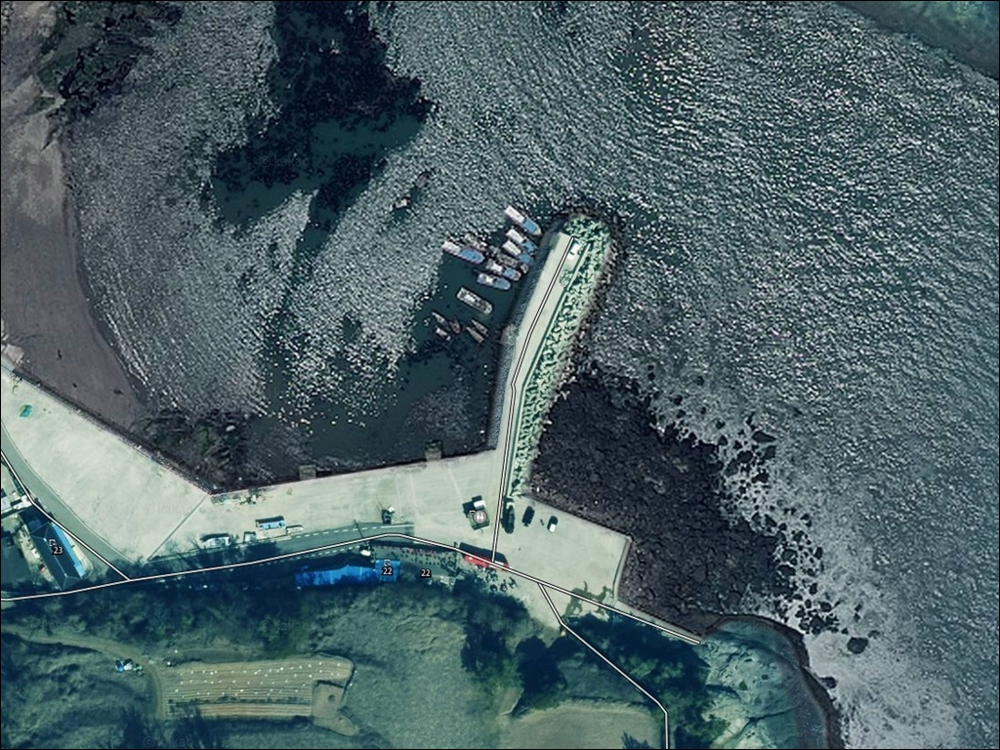
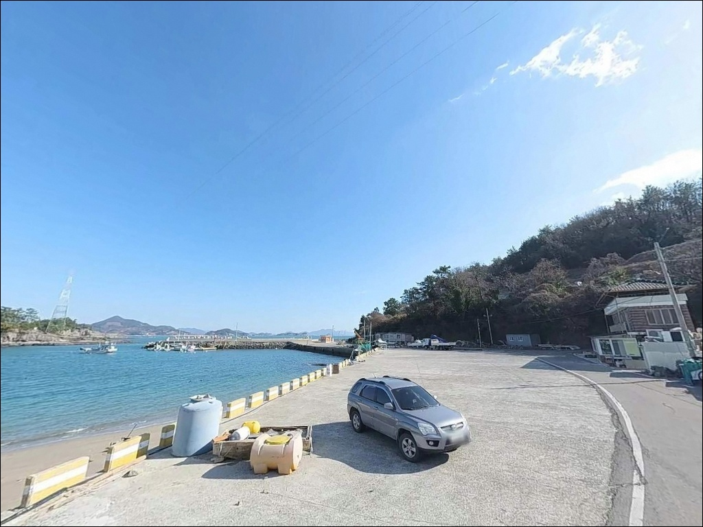
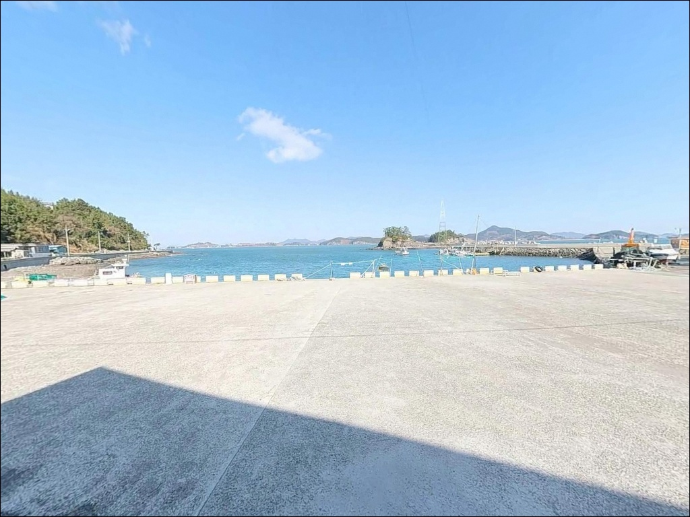
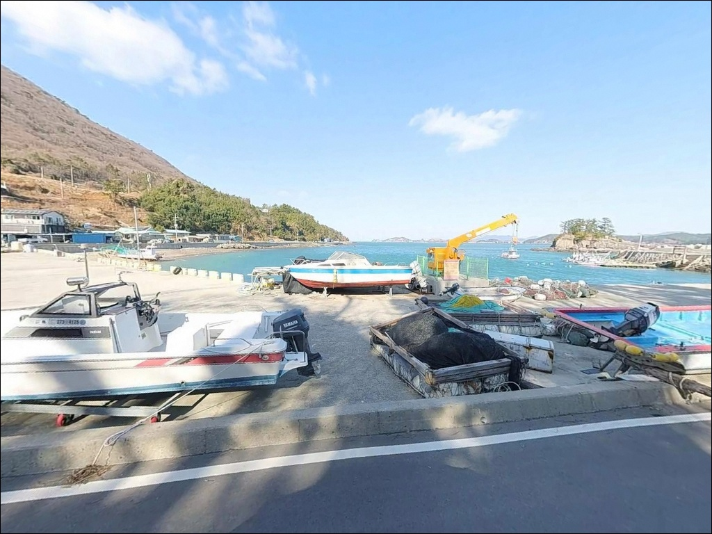
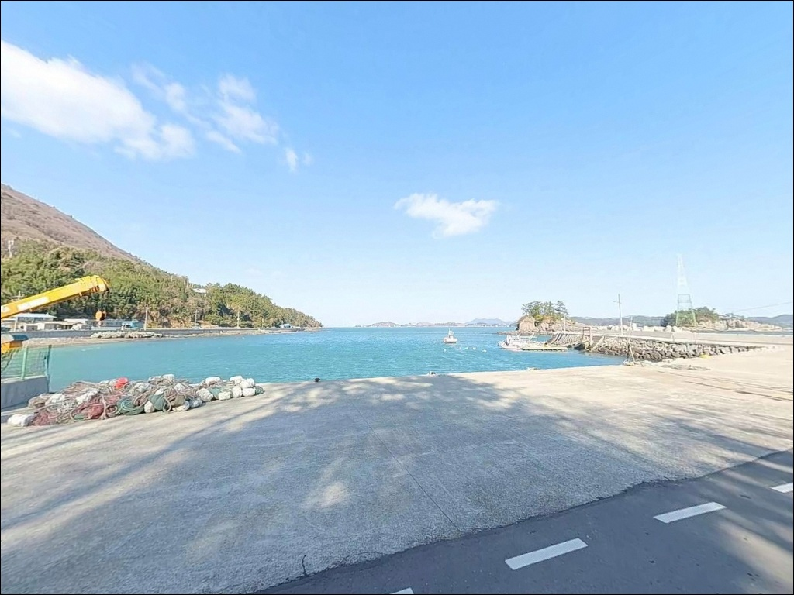
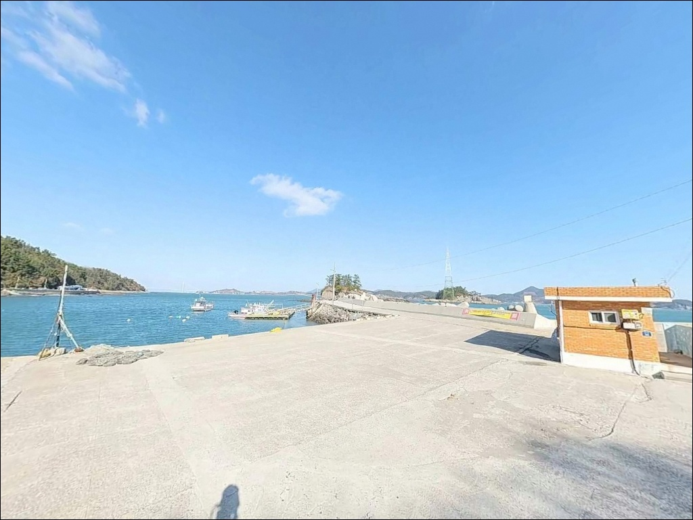
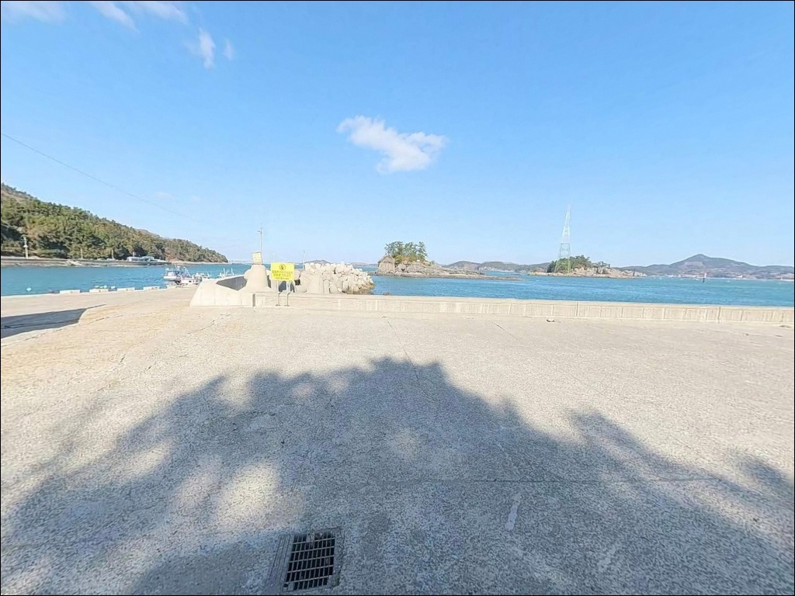
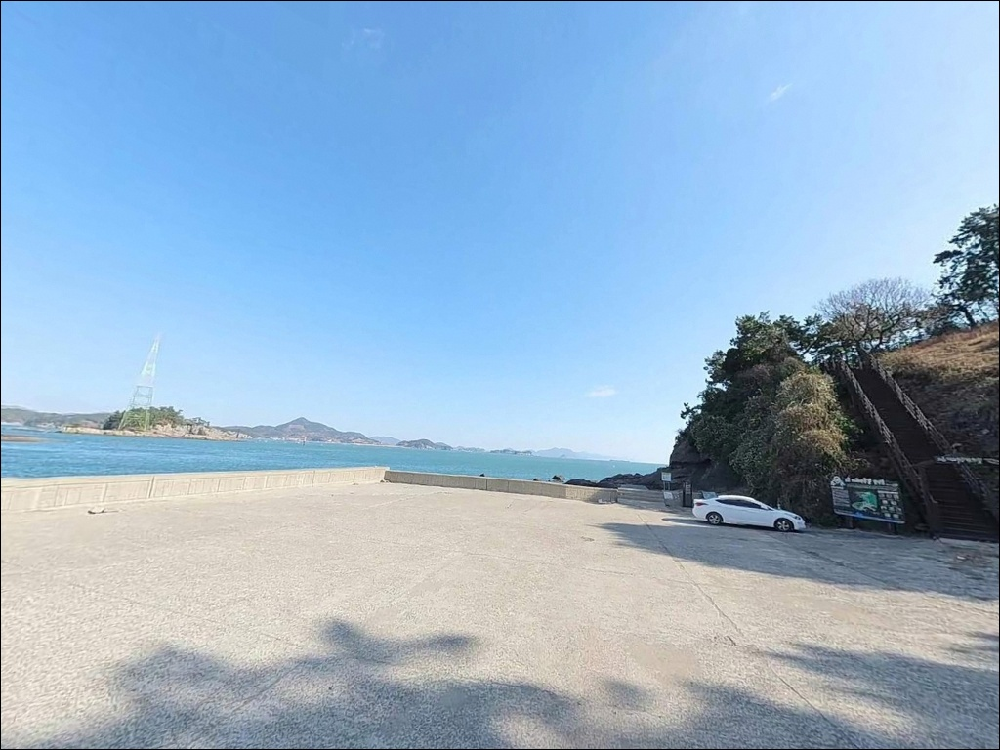
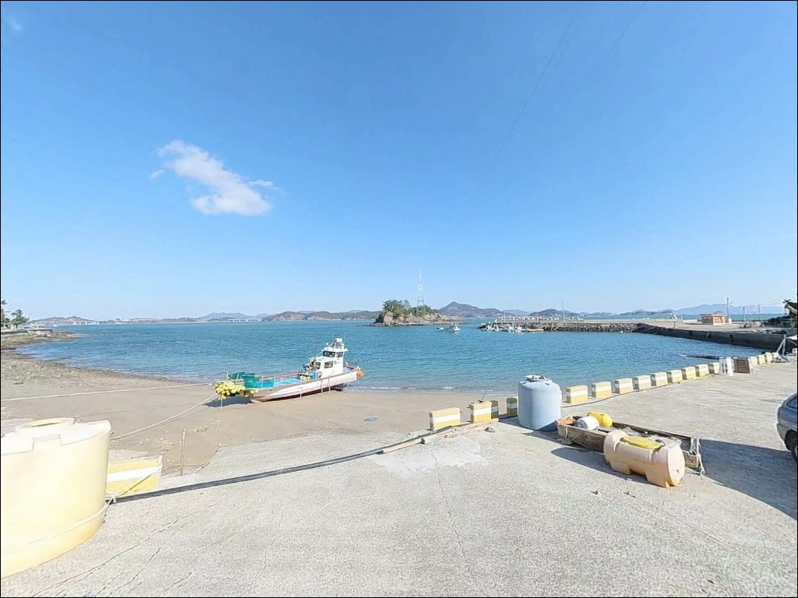

이 페이지에는 광고(제휴 링크 포함)가 있으며, 광고 링크를 통해 구매하면 운영자가 판매 수익 또는 수수료를 받을 수 있습니다. 포인트 사진: 카카오맵 스카이뷰·로드뷰. 이 페이지의 지도·사진 이미지는 카카오맵의 실제 서비스 이미지와 다를 수 있습니다.

우천방파제
전남 고흥군 영남면 우천리 58-3
여자만 관문의 강한 조류가
이 포인트에서 가장 많이 놓치는 변수입니다.
조류 세기를 고려하지 않고 사리 전후에 진입하면
고중량 채비를 써도 바닥을 잡지 못하는 상황이
반복됩니다.
이 글은 우천방파제의 지형 구조,
물때 판단 기준, 낚시 스타일별 운용 조건에
집중합니다.
전남 고흥군 영남면 우천리,
팔영대교와 조발도 사이 수로 입구에 자리한
우천방파제는 북서 방향으로 약 120m 뻗은
메인 방파제와 동쪽 보조 방파제가
항을 감싸는 구조입니다.
외항 전체가 테트라포드로 마감되어 있고,
끝단 수심은 만조 시 8~10m까지 깊어지는
본격 낚시 포인트입니다.
이 글은 조황 단정이나 특정 어종 보장을
다루지 않습니다.
지형 구조, 조류 특성, 진입 환경,
낚시 방식별 적합 조건을 중심으로 정리했습니다.

우천방파제로 향하는 진입로는
77번 국도(팔영대교로)에서
우천마을 방향으로 빠지는 구간입니다.
이 구간은 왕복 2차선으로 잘 정비되어 있어
대형 카라반이나 캠핑카도 진입에 제약이 없는
수준입니다.
선착장 내부 부지가 넓어
대형 차량도 한 번에 회차가 가능하고,
방파제 시작점 우측 넓은 시멘트 공터와
선착장 배후지를 합산하면
약 20대 이상의 차량이 동시 주차할 수 있습니다.
이 권역 소형 방파제 중에서
접근과 주차 여건 모두 안정적인 편입니다.
어선 접안 밧줄(계류줄) 주변에는
주차하지 않는 것이 기본 매너이며,
선박 입출항 시 낚시 채비를 일시적으로
정리하는 여유가 필요합니다.

선착장과 방파제 초입에
가로등이 잘 설치되어 있어
야간 가시성이 우수한 편입니다.
팔영대교 조명이 인접해 있어
밤에도 완전 암흑이 되지 않는
환경입니다.
방파제 끝단은 조명 영향이 줄어드므로
야간 이동 시 헤드랜턴은 별도로 챙겨야 합니다.
우천리는 민가 밀집도가 높지 않은
조용한 어촌 마을입니다.
야간 차량 통행이 적고 프라이버시 여건도
양호한 편이며,
팔영대교 야경을 조망할 수 있는 위치라
낚시 후 하룻밤 머무는 차박 체류로
나쁘지 않은 환경입니다.
외항은 남동풍에 직접 노출되는 구조이므로
기상 예보에서 남동풍이 강하게 예고된 날은
파도와 너울 영향을 받을 수 있습니다.
내항은 사방이 막힌 구조라
바람과 파도 영향이 상대적으로 적습니다.
선착장 취사 시 화로대를 반드시 사용해야 하며,
바닥에 직접 불을 피우는 행위는 금합니다.

반경 3km 이내에 이마트24 고흥팔영대교점이
약 2.5km 거리에 있습니다.
우천교차로 인근이라
포인트 진입 전 들르기 편리한 위치입니다.
팔영주유소도 약 2.7km 거리에 있어
연료와 기본 식료품은 진입 전 해결이 가능합니다.
영남면 소재지 내에 식당과 소형 마트가
있으며, 영남보건지소는 약 3.5km 거리입니다.
항구 내 자체 매점은 없으므로
세부 낚시 소품이나 얼음, 식수는
진입 전에 미리 준비하는 편이
현장에서 불필요한 이동을 줄이는 방법입니다.

우천방파제 방문 전 가장 먼저 확인할 것은
물때입니다.
여자만 관문에 해당하는 이 해역은
조류 흐름이 매우 강하게 형성되는 구조입니다.
바다타임에서 영남면 기준 물때를 확인하고,
물돌이 타임 전후로 출조 시간을 맞추는 것이
이 포인트의 기본 운용 전략입니다.
사리 전후에는 고중량 채비로도
조류를 버티기 어려울 수 있습니다.
봉돌 무게를 평소보다 한 단계 올려 준비하고,
여분 채비를 넉넉히 챙기는 것이 좋습니다.
외항 테트라포드 경사면은 미끄럽기 때문에
야간 이동 시에는 핀 펠트 단화 착용과
구명조끼 착용이 반드시 필요합니다.
기상 변화가 빠른 해역이므로
출발 당일 기상청 해상 예보를
다시 한번 확인한 뒤 진입하는 것이
헛걸음을 막는 방법입니다.

우천방파제의 핵심은 팔영대교와 조발도 사이
좁은 수로에서 형성되는 물골입니다.
이 물골이 외항 방향으로 흘러들어오며
수심과 조류 흐름을 동시에 만들어냅니다.
외항 끝단은 만조 시 8~10m 수심에
사상(모래)과 수중여가 혼재된 바닥 지형으로,
회유성 어종과 바닥 어종이 함께 기대되는
구조입니다.
내항은 수심 3~5m로 완만하게 얕아지며
소형 어선이 정박하는 구역입니다.
외항과 내항의 수심 차이가 뚜렷한 만큼
어떤 방식으로 들어갈지 먼저 정한 뒤
자리를 선택하는 것이 효율적입니다.
외항 테트라 전방 15m 구간의 물골이
이 포인트의 핵심 공략 지점입니다.
여자만 관문이라는 지리적 특성상
고흥과 여수를 잇는 조류가 이곳을 지납니다.
방파제 외항이 이 조류의 영향을 직접 받으므로
최신 조황은 출조 전에 반드시 검색해 보시기 바랍니다.

이 포인트에서 전문 낚시꾼이 가장 많이 찾는 방식은
감성돔 찌낚시입니다.
외항 테트라포드 전방을 향해
고부력찌로 물골을 직접 공략하는 구조이며,
조류를 태워 흘리는 반유동 채비가
이 포인트 지형에 잘 맞습니다.
조류가 빠를 때는 고부력찌로,
물돌이 전후에는 부력을 낮춰
섬세하게 운용하는 전환이 필요합니다.
야간에는 방파제 가로등 주변과
선착장 끝단이 볼락·우럭 루어낚시 자리로
활성화됩니다.
가을철에는 에깅을 통해 갑오징어와 주꾸미를
노리는 낚시인이 많으며,
만조 전후 야간이 에깅 효율이 오르는
타이밍입니다.
원투낚시는 외항 방향 또는
방파제 초입 갯바위 경계 지점에서 운용합니다.
바닥 지형이 사상과 암반이 혼재된 구조라
도다리·보리멸·붕장어를 기대해 볼 수 있습니다.
물돌이 타임 직후 들물 초반이
원투 입질 시간대로 유리한 편입니다.

우천방파제 조류가 너무 강하거나
파도 영향이 클 때
첫 번째 대안은 사호방파제입니다.
우천방파제 남서쪽 약 4km 거리로
조용하고 잔잔한 여건을 원하는 낚시인에게
적합한 구조입니다.
용암방파제(영남용바위)는
우천방파제 남쪽 약 8km 거리에 있습니다.
고흥 영남면의 대표 낚시 포인트로
갯바위 지형이 발달해 있어
전문 찌낚시와 루어낚시를 동시에 운용할 수 있는
규모가 더 큰 포인트입니다.
차박 여건이 우천방파제보다 나은 곳을 찾는다면
팔영대교 전망공원이 차로 3분 거리에 있습니다.
깨끗한 화장실과 넓은 주차장을 갖춘
공식 휴게 공간으로,
낚시 후 이동해 하룻밤 머무는 차박 동선으로
활용도가 높습니다.

감성돔 찌낚시를 주력으로 삼거나
가을 에깅·야간 볼락 루어낚시를 즐기는 낚시인이라면
우천방파제 지형 구조가 기대에 부응하는
수준의 포인트입니다.
외항 끝단의 깊은 수심과 여자만 물골,
테트라 주변 암초 지형이
복합 낚시 스타일을 소화할 수 있는 조건을
갖추고 있습니다.
다만 조류 세기를 확인하지 않고
사리 전후에 무작정 진입하면
채비 컨트롤이 불가능한 상황이 됩니다.
물때 확인, 봉돌 무게 준비, 여분 채비 확보,
이 세 가지를 갖추고 가는 낚시인에게
우천방파제는 충분한 가능성을 보여주는 곳입니다.
진입과 주차 여건이 양호하고
반경 3km 이내에 편의점과 주유소가 있어
원거리 이동 부담 없이
낚시와 차박을 이어붙이기 좋은 포인트입니다.